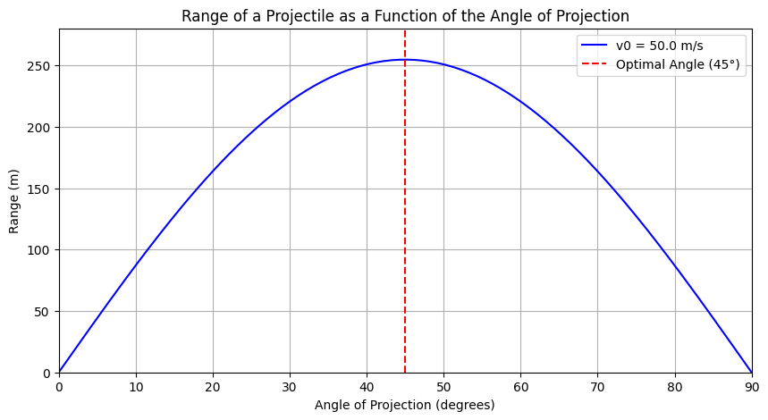
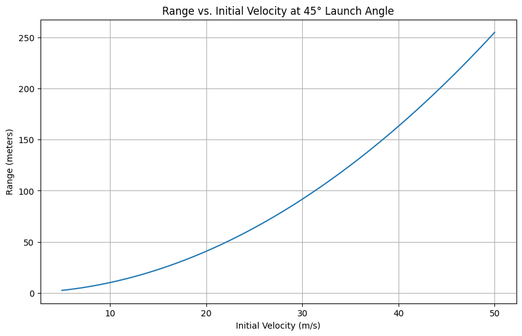
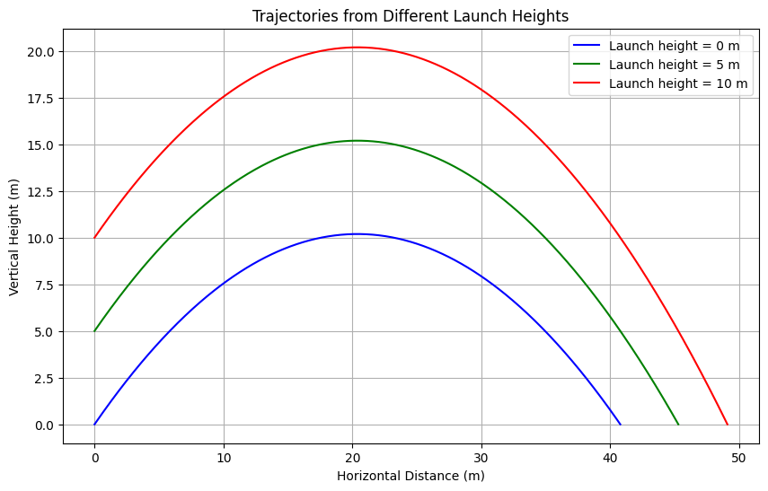
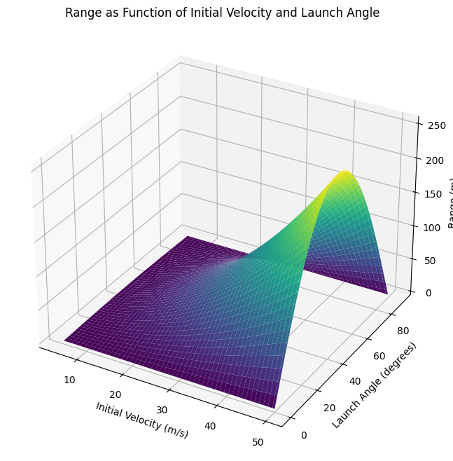

Problem 1
Investigating the Range as a Function of the Angle of Projection
1. Theoretical Foundation
Governing Equations of Motion
The motion of a projectile can be described using the basic principles of kinematics. Let's break down the motion into its horizontal and vertical components.
Let: - \( v_0 \) = initial velocity - \( \theta \) = angle of projection - \( g \) = acceleration due to gravity (approximately \( 9.81 \, \text{m/s}^2 \))
The initial velocity can be resolved into its components: - Horizontal component: \( v_{0x} = v_0 \cos(\theta) \) - Vertical component: \( v_{0y} = v_0 \sin(\theta) \)
The equations of motion are given by:
-
Horizontal Motion: $$ x(t) = v_{0x} t = v_0 \cos(\theta) t $$
-
Vertical Motion: $$ y(t) = v_{0y} t - \frac{1}{2} g t^2 = v_0 \sin(\theta) t - \frac{1}{2} g t^2 $$
To find the time of flight, we set \( y(t) = 0 \) when the projectile returns to the ground:
Factoring out time \( t \), we have:
This gives two solutions: \( t = 0 \) (launch time) or
Range as a Function of Angle
The horizontal range \( R \) is the horizontal distance covered by the projectile when it returns to the launch height (i.e., \( y = 0 \)). Substituting \( t \) into the horizontal motion equation gives us:
Simplifying this, we get:
Family of Solutions
The range \( R \) is a function of the angle \( \theta \) and is influenced by initial velocity \( v_0 \) and gravitational acceleration \( g \). Variations in these parameters lead to different projectile paths (trajectories) but still adhere to the same underlying equations.
2. Analysis of the Range
Dependency of Range on Angle of Projection
The derived equation \( R = \frac{v_0^2 \sin(2\theta)}{g} \) shows that the range reaches its maximum when \( \theta = 45^\circ \) because \( \sin(90^\circ) = 1 \).
Influence of Other Parameters
- Initial Velocity \( v_0 \): Increasing \( v_0 \) increases the range quadratically.
- Gravitational Acceleration \( g \): An increase in \( g \) decreases the range. Therefore, on planets with lower gravity, the range would be larger for the same initial velocity and angle.
3. Practical Applications
The idealization of projectile motion can be extended to more complicated scenarios such as:
- Uneven Terrain: Modifying the equations for different launch and landing heights.
- Air Resistance: Incorporating drag forces which depend on the shape and velocity of the projectile can be modeled using differential equations.
4. Implementation
Python Simulation and Visualization
Below is a Python script that simulates projectile motion and visualizes the range as a function of the angle of projection.
Graphical Representation
 The graph above shows the relationship between the range and angle of projection, highlighting the optimal angle at \( 45^\circ \).
Effect of Varying Initial Velocity Visualize how the maximum range varies with different initial velocities at an optimal angle (~45°). 
Impact of Launch Height Show how launching from different heights affects the trajectory and impact point. 
A 3D surface plot to visualize how range depends on both initial velocity and launch angle. 
Limitations and Suggestions for Improvement
This model assumes: - No air resistance - Flat terrain
Incorporating More Realistic Factors: - Introduce drag force in the model to account for air resistance. - Adjust the equations for projectiles launched from different heights. - Explore the impact of wind and other environmental factors.
Conclusion
The analysis of projectile motion reveals that fundamental physics principles govern the range as a function of the angle of projection. By employing numerical methods and simulations, we can explore a broader range of conditions, making this topic applicable to various fields such as sports, engineering, and astrophysics.